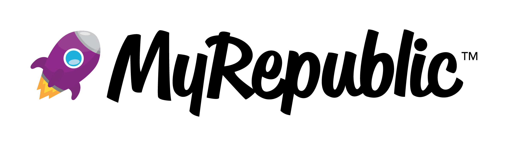
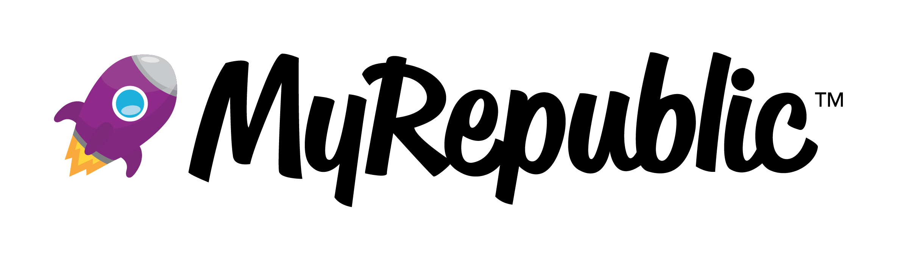

Kelola Penjualan & Stok
Jadi Lebih Rapi dalam Sekejap
Aplikasi kasir paling simpel untuk UMKM Indonesia.
Pantau bisnis dari mana
saja, kapan saja.

Aplikasi kasir paling simpel untuk UMKM Indonesia.
Pantau bisnis dari mana
saja, kapan saja.
Rapiin POS telah digunakan oleh berbagai merchant dan mendapatkan dukungan serta publikasi dari instansi dan media terpercaya.


 


Rapiin POS membantu merapikan stok, mengotomatiskan laporan, dan mengelola outlet dalam satu sistem yang terintegrasi.
Sering kehabisan stok atau justru menumpuk? Pencatatan manual bikin pusing dan rawan kesalahan?
Masih rekap penjualan satu per satu? Laporan sering telat dan tidak akurat untuk ambil keputusan?
Sulit mengontrol banyak outlet karena data tidak terpusat dan sulit dipantau secara menyeluruh?
Dengan Rapiin, pencatatan stok dilakukan otomatis setiap transaksi, sehingga data selalu akurat.
Dengan Rapiin POS, proses pelaporan keuangan menjadi otomatis, cepat, dan mudah dipahami.
Rapiin POS menghubungkan semua outlet dalam satu sistem terpusat untuk kontrol bisnis yang lebih baik.
Setiap fitur Rapiin POS dirancang untuk mempercepat transaksi, merapikan operasional, dan memberi kontrol penuh atas bisnis.

UI kasir yang intuitif untuk proses pembayaran lebih singkat, akurat, dan mudah digunakan oleh siapa pun.

Pantau ketersediaan produk dan pergerakan stok secara langsung untuk menghindari kehabisan atau penumpukan barang.

UI kasir yang intuitif untuk proses pembayaran lebih singkat, akurat, dan mudah digunakan oleh siapa pun.

Kelola hak akses karyawan, pantau performa tiap outlet, dan kontrol seluruh operasional bisnis dalam satu sistem terpusat.
Mulai dari coba gratis hingga beli lepas tanpa langganan. Fleksibel untuk bisnis baru maupun yang sedang berkembang.

Pengalaman langsung dari pengguna yang kini mengelola bisnis dengan lebih rapi dan terkontrol.
Temukan jawaban atas pertanyaan yang paling sering diajukan sebelum mulai menggunakan Rapiin POS untuk mengelola bisnis Anda.
Platform Point of Sale (Kasir Digital) berbasis SaaS yang dirancang khusus untuk membantu pemilik UMKM merapikan pembukuan, stok barang, dan laporan transaksi secara otomatis.
Ya. Rapiin POS dirancang untuk UMKM hingga bisnis multi-outlet. Sistemnya fleksibel dan bisa digunakan mulai dari satu toko hingga banyak cabang.
Rapiin POS dapat digunakan pada perangkat seperti komputer, laptop, dan tablet yang terhubung dengan sistem kasir.
Bergabunglah dengan ribuan pemilik UMKM yang telah merasakan kemudahan
mengelola
bisnis dengan Rapiin. Gratis, tanpa ribet!